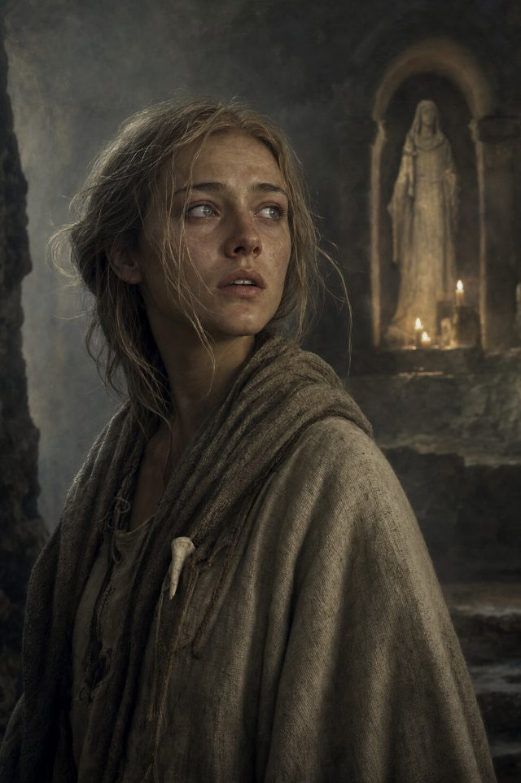
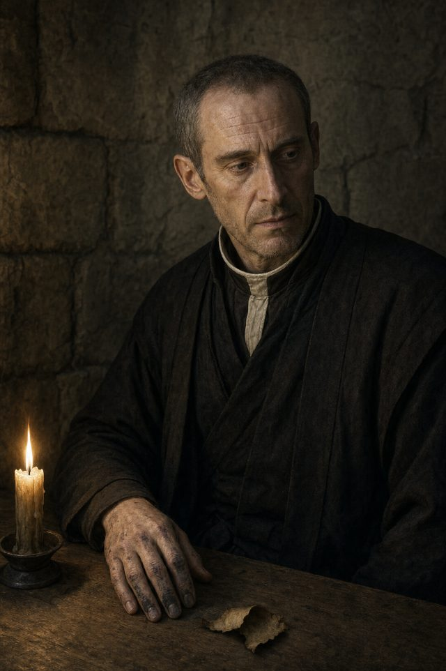
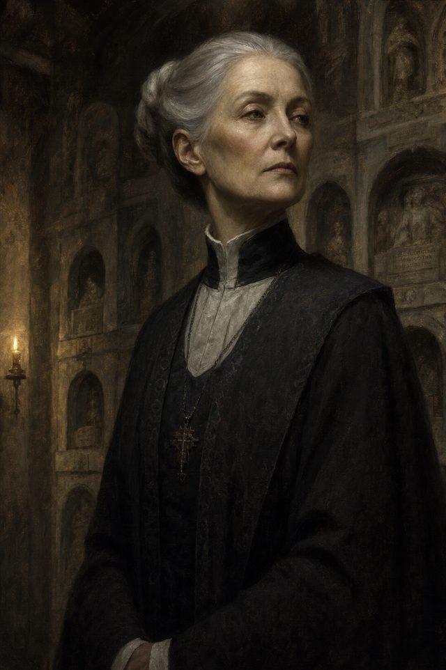

Sela
The Light Heights · 19
A goatherd who hears a voice — or does not — and refuses to say more than she knows. The house makes her its public meaning, whether she consents or not.
The people of Book One first, then the wider realm behind them — recorded without judgement, as the archive requires. Most of the Ten Houses reach the valley only as a name, a good, or a distant pressure.

The Light Heights · 19
A goatherd who hears a voice — or does not — and refuses to say more than she knows. The house makes her its public meaning, whether she consents or not.

House Whitehart · 45
The Tester. Sixteen years turning uncertainty into verdict; now he carries the one thing a tester should not own — his first doubt.

House Whitehart · ~60
Head of the listening house. Fifty years of authority built from stillness. The book's two interludes are hers.

House Whitehart · 24
The Unwritten. He tends the niches and knows every name in the wall; the house has never been permitted to speak his.

The valley · 52
Col's mother. She keeps the same vigil at the boundary each first snow, asking only that a name return to ordinary speech.

The valley
A worker and guide: proud, practical, and loved. Standing, money, and a horse promised to a boy all lean on a single choice.

House Blackcrest
The Jubilee Herald. He comes to write the valley down — a mercy to the forgotten, and a record that can become a weapon.

House Whitehart
Law and rite. She makes the correct word binding, even when the correct word wounds.

House Whitehart · 16
A novice whose sincere love turns ordinary acts into signs. No liar — and an engine of myth all the same.
Other houses enter the valley as law, goods, and political weather — never as a lecture on themselves.

House Stonebear
An oath-witness who keeps the boundary exactly as it is written — honorable, coherent, and ruinous.

Duskport trader · 46
A trader and ledger-keeper who feeds the valley on credit and moving goods. Her usefulness is real; so is her price.

A traveler · 29
A traveler carrying contradictory news from the realm beyond the passes — honest enough not to pretend it is certain.

House Stormrider · 38
A servant in Nella's party who struggles to say I, and carries scars the book declines to explain.
Beyond the valley stand the other Great Houses — each a philosophy of leadership, explored on The Great Houses. Their named leaders and heirs are held back from these pages until the book is published.
More of Book One’s Whitehart and valley hands, recorded by name.